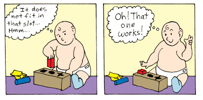
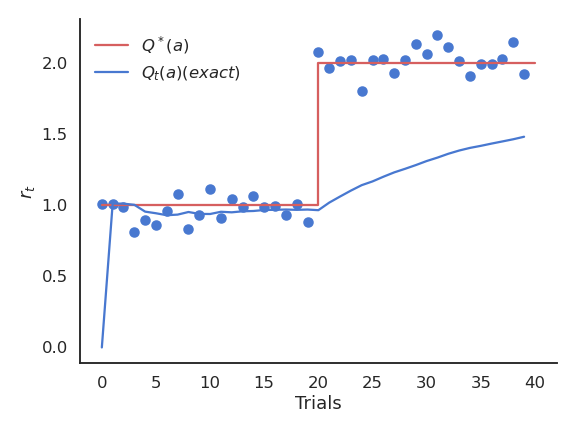
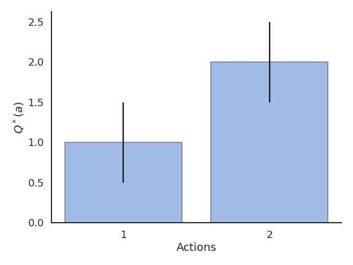
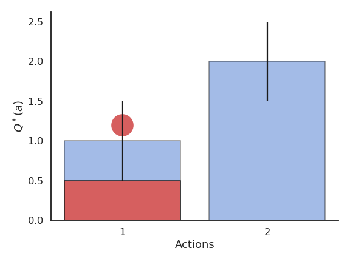
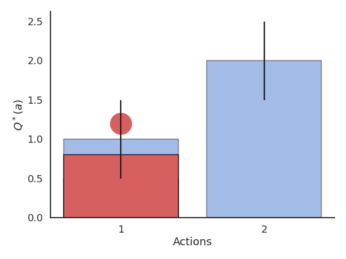
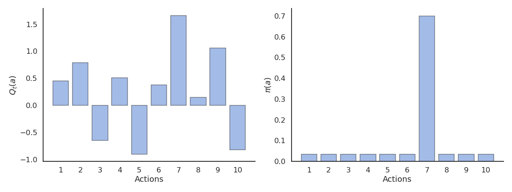
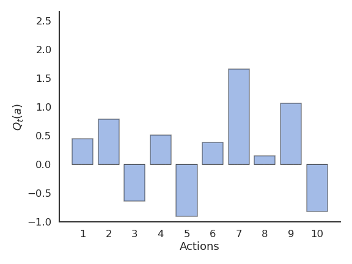
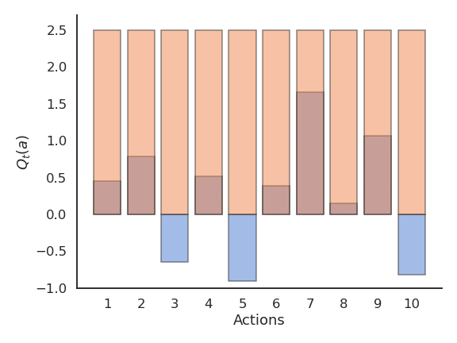
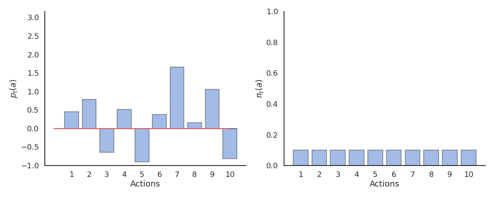
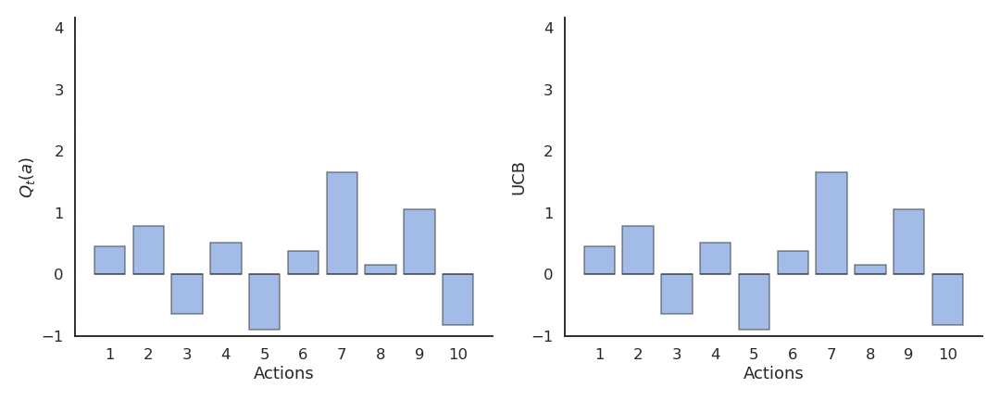

Deep Reinforcement Learning
Bandits
Julien Vitay
Professur für Künstliche Intelligenz - Fakultät für Informatik
Outline
n-armed bandits
Sampling
Action selection
Greedy action selection
\epsilon-greedy action selection
Softmax action selection
Optimistic initialization
Reinforcement comparison
Gradient bandit algorithm
Upper-Confidence-Bound action selection
Contextual bandits
Evaluative Feedback

RL evaluates actions through trial-and-error rather than comparing its predictions to the correct actions.
Evaluative feedback indicates how good the action is, but not whether it is the best or worst action possible.
Associative learning: inputs are mapped to the best possible outputs (general RL).
Non-associative learning: finds one best output, regardless of the current state or past history (bandits).
n-armed bandits
The n-armed bandit (or multi-armed bandit) is a non-associative evaluative feedback procedure.
Learning and action selection take place in the same single state.
The n actions have different reward distributions.
The goal is to find out through trial and error which action provides the most reward on average.
n-armed bandits
We have the choice between N different actions (a_1, ..., a_N).
Each action a taken at time t provides a reward r_t drawn from the action-specific probability distribution r(a).
The mathematical expectation of that distribution is the expected reward, called the true value of the action Q^*(a).
Q^*(a) = \mathbb{E} [r(a)]
- The reward distribution also has a variance: we usually ignore it in RL, as all we care about is the optimal action a^* (but see distributional RL later).
a^* = \text{argmax}_a \, Q^*(a)
- If we take the optimal action an infinity of times, we maximize the reward intake on average.
n-armed bandits
- The question is how to find out the optimal action through trial and error, i.e. without knowing the exact reward distribution r(a).
- We only have access to samples of r(a) by taking the action a at time t (a trial, play or step).
r_t \sim r(a)
The received rewards r_t vary around the true value over time.
We need to build estimates Q_t(a) of the value of each action based on the samples.
These estimates will be very wrong at the beginning, but should get better over time.
2 - Sampling-based evaluation
Sampling-based evaluation
- The expectation of the reward distribution can be approximated by the mean of its samples:
\mathbb{E} [r(a)] \approx \frac{1}{N} \sum_{t=1}^N r_t |_{a_t = a}
- Suppose that the action a had been selected t times, producing rewards
(r_1, r_2, ..., r_t)
- The estimated value of action a at play t is then:
Q_t (a) = \frac{r_1 + r_2 + ... + r_t }{t}
- Over time, the estimated action-value converges to the true action-value:
\lim_{t \to \infty} Q_t (a) = Q^* (a)
Online evaluation
- The drawback of maintaining the mean of the received rewards is that it consumes a lot of memory:
Q_t (a) = \frac{r_1 + r_2 + ... + r_t }{t} = \frac{1}{t} \, \sum_{i=1}^{t} r_i
- It is possible to update an estimate of the mean in an online or incremental manner:
\begin{aligned}
Q_{t+1}(a) &= \frac{1}{t+1} \, \sum_{i=1}^{t+1} r_i = \frac{1}{t+1} \, (r_{t+1} + \sum_{i=1}^{t} r_i )\\
&= \frac{1}{t+1} \, (r_{t+1} + t \, Q_{t}(a) ) \\
&= \frac{1}{t+1} \, (r_{t+1} + (t + 1) \, Q_{t}(a) - Q_t(a))
\end{aligned}
- The estimate at time t+1 depends on the previous estimate at time t and the last reward r_{t+1}:
Q_{t+1}(a) = Q_t(a) + \frac{1}{t+1} \, (r_{t+1} - Q_t(a))
Online evaluation
The problem with the exact mean is that it is only exact when the reward distribution is stationary, i.e. when the probability distribution does not change over time.
If the reward distribution is non-stationary, the \frac{1}{t+1} term will become very small and prevent rapid updates of the mean.

Online evaluation
- The solution is to replace \frac{1}{t+1} with a fixed parameter called the learning rate (or step size) \alpha:
\begin{aligned}
Q_{t+1}(a) & = Q_t(a) + \alpha \, (r_{t+1} - Q_t(a)) \\
& \\
& = (1 - \alpha) \, Q_t(a) + \alpha \, r_{t+1}
\end{aligned}
- The computed value is called a moving average (or sliding average), as if one used only a small window of the past history.

Online evaluation
Q_{t+1}(a) = Q_t(a) + \alpha \, (r_{t+1} - Q_t(a))
or:
\Delta Q(a) = \alpha \, (r_{t+1} - Q_t(a))
The moving average adapts very fast to changes in the reward distribution and should be used in non-stationary problems.
It is however not exact and sensible to noise.
Choosing the right value for \alpha can be difficult.
- The form of this update rule is very important to remember:
\text{new estimate} = \text{current estimate} + \alpha \, (\text{target} - \text{current estimate})
Action selection
Let’s suppose we have formed reasonable estimates of the Q-values Q_t(a) at time t.
Which action should we do next?
If we select the next action a_{t+1} randomly (random agent), we do not maximize the rewards we receive, but we can continue learning the Q-values.
Choosing the action to perform next is called action selection and several schemes are possible.
Action selection
Greedy action selection
\epsilon-greedy action selection
Softmax action selection
Optimistic initialization
Reinforcement comparison
Gradient bandit algorithm
Upper-Confidence-Bound action selection
Greedy action selection

- The greedy action is the action whose estimated value is maximal at time t based on our current estimates:
a^*_t = \text{argmax}_{a} Q_t(a)
If our estimates Q_t are correct (i.e. close from Q^*), the greedy action is the optimal action and we maximize the rewards on average.
If our estimates are wrong, the agent will perform sub-optimally.
Greedy action selection

- This defines the greedy policy, where the probability of taking the greedy action is 1 and the probability of selecting another action is 0:
\pi(a) = \begin{cases}
1 \; \text{if} \; a = a_t^* \\
0 \; \text{otherwise.} \\
\end{cases}
- The greedy policy is deterministic: the action taken is always the same for a fixed Q_t.
Problem with greedy action selection
- Greedy action selection only works when the estimates are good enough.

Problem with greedy action selection
- Estimates are initially bad (e.g. 0 here), so an action is sampled randomly and a reward is received.

Problem with greedy action selection
- The Q-value of that action becomes positive, so it becomes the greedy action.

Problem with greedy action selection
- Greedy action selection will always select that action, although the second one would have been better.

Exploration-exploitation dilemma

\epsilon-greedy action selection

\epsilon-greedy action selection ensures a trade-off between exploitation and exploration.
The greedy action is selected with probability 1 - \epsilon (with 0 < \epsilon <1), the others with probability \epsilon:
\pi(a) = \begin{cases} 1 - \epsilon \; \text{if} \; a = a_t^* \\ \frac{\epsilon}{|\mathcal{A}| - 1} \; \text{otherwise.} \end{cases}
\epsilon-greedy action selection
The parameter \epsilon controls the level of exploration: the higher \epsilon, the more exploration.
One can set \epsilon high at the beginning of learning and progressively reduce it to exploit more.
However, it chooses equally among all actions: the worst action is as likely to be selected as the next-to-best action.
Softmax action selection

\pi(a) = \dfrac{\exp \dfrac{Q_t(a)}{\tau}}{ \displaystyle\sum_{a'} \exp \dfrac{Q_t(a')}{\tau}}
where \tau is a positive parameter called the temperature.
Softmax action selection

Example of action selection for the 10-armed bandit
Procedure as in (Sutton and Barto, 2017):
N = 10 possible actions with Q-values Q^*(a_1), ... , Q^*(a_{10}) randomly chosen in \mathcal{N}(0, 1).
Each reward r_t is drawn from a normal distribution \mathcal{N}(Q^*(a), 1) depending on the selected action.
Estimates Q_t(a) are initialized to 0.
The algorithms run for 1000 plays, and the results are averaged 200 times.
Greedy action selection
Greedy action selection allows to get rid quite early of the actions with negative rewards.
However, it may stick with the first positive action it founds, probably not the optimal one.
The more actions you have, the more likely you will get stuck in a suboptimal policy.

\epsilon-greedy action selection
\epsilon-greedy action selection continues to explore after finding a good (but often suboptimal) action.
It is not always able to recognize the optimal action (it depends on the variance of the rewards).

Softmax action selection

Greedy vs. \epsilon-greedy
The greedy method learns faster at the beginning, but get stuck in the long-term by choosing suboptimal actions (50% of trials).
\epsilon-greedy methods perform better on the long term, because they continue to explore.
High values for \epsilon provide more exploration, hence find the optimal action earlier, but also tend to deselect it more often: with a limited number of plays, it may collect less reward than smaller values of \epsilon.
Softmax vs. \epsilon-greedy
The softmax does not necessarily find a better solution than \epsilon-greedy, but it tends to find it faster (depending on \epsilon or \tau), as it does not lose time exploring obviously bad solutions.
\epsilon-greedy or softmax methods work best when the variance of rewards is high.
If the variance is zero (always the same reward value), the greedy method would find the optimal action more rapidly: the agent only needs to try each action once.
Exploration schedule
A useful technique to cope with the exploration-exploitation dilemma is to slowly decrease the value of \epsilon or \tau with the number of plays.
This allows for more exploration at the beginning of learning and more exploitation towards the end.
It is however hard to find the right decay rate for the exploration parameters.

Exploration schedule
The performance is worse at the beginning, as the agent explores with a high temperature.
But as the agent becomes greedier and greedier, the performance become more optimal than with a fixed temperature.
Optimistic initial values
\begin{aligned}
&Q_{t+1}(a) = (1 - \alpha) \, Q_t(a) + \alpha \, r_{t+1} \\
&\\
& \rightarrow Q_1(a) = (1 - \alpha) \, Q_0(a) + \alpha \, r_1 \\
& \rightarrow Q_2(a) = (1 - \alpha) \, Q_1(a) + \alpha \, r_2 = (1- \alpha)^2 \, Q_0(a) + (1-\alpha)\alpha \, r_1 + \alpha r_2 \\
\end{aligned}
The influence of Q_0 on Q_t fades quickly with (1-\alpha)^t, but that can be lost time or lead to a suboptimal policy.
However, we can use this at our advantage with optimistic initialization.
Optimistic initial values
By choosing very high initial values for the estimates (they can only decrease), one can ensure that all possible actions will be selected during learning by the greedy method, solving the exploration problem.
This leads however to an overestimation of the value of other actions.

Reinforcement comparison
Actions followed by large rewards should be made more likely to recur, whereas actions followed by small rewards should be made less likely to recur.
But what is a large/small reward? Is a reward of 5 large or small?
Reinforcement comparison methods only maintain a preference p_t(a) for each action, which is not exactly its Q-value.
The preference for an action is updated after each play, according to the update rule:
p_{t+1}(a_t) = p_{t}(a_t) + \beta \, (r_t - \tilde{r}_t)
where \tilde{r}_t is the moving average of the recently received rewards (regardless the action):
\tilde{r}_{t+1} = \tilde{r}_t + \alpha \, (r_t - \tilde{r}_t)
If an action brings more reward than usual (good surprise), we increase the preference for that action.
If an action brings less reward than usual (bad surprise), we decrease the preference for that action.
\beta > 0 and 0 < \alpha < 1 are two constant parameters.
Reinforcement comparison
- Preferences are updated by replacing the action-dependent Q-values by a baseline \tilde{r}_t:
p_{t+1}(a_t) = p_{t}(a_t) + \beta \, (r_t - \tilde{r}_t)
- The preferences can be used to select the action using the softmax method just as the Q-values (without temperature):
\pi_t (a) = \dfrac{\exp p_t(a)}{ \displaystyle\sum_{a'} \exp p_t(a')}

Reinforcement comparison
Reinforcement comparison can be very effective, as it does not rely only on the rewards received, but also on their comparison with a baseline, the average reward.
This idea is at the core of actor-critic architectures which we will see later.
The initial average reward \tilde{r}_{0} can be set optimistically to encourage exploration.
Gradient bandit algorithm
Instead of only increasing the preference for the executed action if it brings more reward than usual, we could also decrease the preference for the other actions.
The preferences are used to select an action a_t via softmax:
\pi_t (a) = \dfrac{\exp p_t(a)}{ \displaystyle\sum_{a'} \exp p_t(a')}
- Update rule for the action taken a_t:
p_{t+1}(a_t) = p_{t}(a_t) + \beta \, (r_t - \tilde{r}_t) \, (1 - \pi_t(a_t))
- Update rule for the other actions a \neq a_t:
p_{t+1}(a) = p_{t}(a) - \beta \, (r_t - \tilde{r}_t) \, \pi_t(a)
- Update of the reward baseline:
\tilde{r}_{t+1} = \tilde{r}_t + \alpha \, (r_t - \tilde{r}_t)
Gradient bandit algorithm
The preference can increase become quite high, making the policy greedy towards the end.
No need for a temperature parameter!

Gradient bandit algorithm
- Gradient bandit is not always better than reinforcement comparison, but learns initially faster (depending on the parameters \alpha and \beta).
Upper-Confidence-Bound action selection
In the previous methods, exploration is controlled by an external parameter (\epsilon or \tau) which is global to each action an must be scheduled.
A much better approach would be to decide whether to explore an action based on the uncertainty about its Q-value:
- If we are certain about the value of an action, there is no need to explore it further, we only have to exploit it if it is good.
The central limit theorem tells us that the variance of a sampling estimator decreases with the number of samples:
- The distribution of sample averages is normally distributed with mean \mu and variance \frac{\sigma^2}{N}.
S_N \sim \mathcal{N}(\mu, \frac{\sigma}{\sqrt{N}})
- The more you explore an action a, the smaller the variance of Q_t(a), the more certain you are about the estimation, the less you need to explore it.
Upper-Confidence-Bound action selection
- Upper-Confidence-Bound (UCB) action selection is a greedy action selection method that uses an exploration bonus:
a^*_t = \text{argmax}_{a} \left[ Q_t(a) + c \, \sqrt{\frac{\ln t}{N_t(a)}} \right]
Q_t(a) is the current estimated value of a and N_t(a) is the number of times the action a has already been selected.
It realizes a balance between trusting the estimates Q_t(a) and exploring uncertain actions which have not been explored much yet.
The term \sqrt{\frac{\ln t}{N_t(a)}} is an estimate of the variance of Q_t(a). The sum of both terms is an upper-bound of the true value \mu + \sigma.
When an action has not been explored much yet, the uncertainty term will dominate and the action be explored, although its estimated value might be low.
When an action has been sufficiently explored, the uncertainty term goes to 0 and we greedily follow Q_t(a).
Upper-Confidence-Bound action selection
- The exploration-exploitation trade-off is automatically adjusted by counting visits to an action.
a^*_t = \text{argmax}_{a} \left[ Q_t(a) + c \, \sqrt{\frac{\ln t}{N_t(a)}} \right]

Upper-Confidence-Bound action selection
- The “smart” exploration of UCB allows to find the optimal action faster.
Summary of evaluative feedback methods
Greedy, \epsilon-greedy, softmax, reinforcement comparison, gradient bandit and UCB all have their own advantages and disadvantages depending on the type of problem: stationary or not, high or low reward variance, etc…
These simple techniques are the most useful ones for bandit-like problems: more sophisticated ones exist, but they either make too restrictive assumptions, or are computationally intractable.
Take home messages:
RL tries to estimate values based on sampled rewards.
One has to balance exploitation and exploration throughout learning with the right action selection scheme.
Methods exploring more find better policies, but are initially slower.
Contextual bandits
- In contextual bandits, the obtained rewards do not only depend on the action a, but also on the state or context s:
r_{t+1} \sim r(s, a)
For example, the n-armed bandit could deliver rewards with different probabilities depending on:
The problem is simply to estimate Q(s, a) instead of Q(a)…
- Some efficient algorithms have been developed recently, for example:
Agarwal, A., Hsu, D., Kale, S., Langford, J., Li, L., and Schapire, R. E. (2014). Taming the Monster: A Fast and Simple Algorithm for Contextual Bandits. in Proceedings of the 31 st International Conference on Machine Learning (Beijing, China), 9. http://proceedings.mlr.press/v32/agarwalb14.pdf